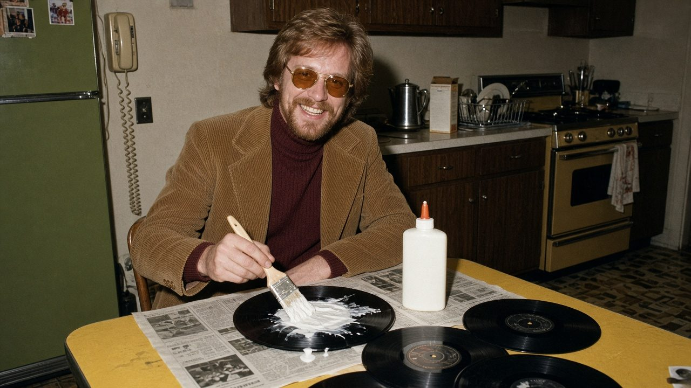
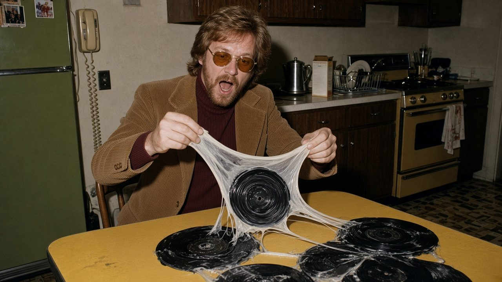

Vinyl desk · The interview ·
“I Just Wanted Them Clean”
Dwayne Pettibone of Lower Fudgeley, Ohio, heard you can lift the dust off a record with a thin coat of wood glue. He did not hear the word “thin”.

We met Dwayne in his kitchen, which still smells faintly of carpentry. He offered us a coffee, then remembered the mugs were glued to the record shelf.
Dwayne, what happened?
I cleaned my records. All 412 of them. Now I own one record. It weighs ninety pounds.
Where did you hear about the wood glue trick?
A guy at the hardware store. He said “a thin layer, let it dry, peel it off, the dust comes with it.” I heard “layer”, “dry” and “peel”. I’m a busy man.
How thick did you go?
About as thick as a pancake. A good pancake. I switched to a paint roller for the double albums.

And you let it dry?
For about four minutes. Then I stacked them so they’d dry faster. Together. As a team.
Which glue did you use?
The yellow one. The bottle says “Exterior. Waterproof. Permanent.” I figured my records deserved the best.
“The turntable is now also part of the collection.”
Can you still play anything?
The top one. The needle goes in. It doesn’t come out. So the turntable is now also part of the collection.
What about the labels?
They came off with the glue, in one piece, like a little see-through ghost of the record. I hung them in the kitchen window. They catch the light. My wife says it’s the only thing in this house that still spins.
Advertisement · fake

So what now?
I’m buying it all back. Same records, same shops, one at a time. Last week I bought my own copy of Frampton Comes Alive! back from Vern at Spin City. Three times what I paid. He says it’s “collectable now, because so few survived.” I asked who didn’t survive them. He pointed at me.
Do the shops know what happened?
Every one of them. When I walk in, they ring a little bell. Not the door bell. A special one. Vern’s put my picture up behind the till. It says “Our Best Customer”. Underneath somebody wrote “twice”.
Any advice for our readers?
Support your local record shop. I’m paying for their new roof. And they’re the only people in town who still talk to me. And Mom, if you’re reading this: the cat is fine. He’s just a bit shinier now.
Fine print: Dwayne is invented. The trick is real, sort of: a very thin coat of plain white PVA glue, left to dry for a full day, then peeled off. Keep it off the label, and never, ever stack them. No records were harmed in the making of this interview. Several hundred were harmed before it.
← Back to the true tales